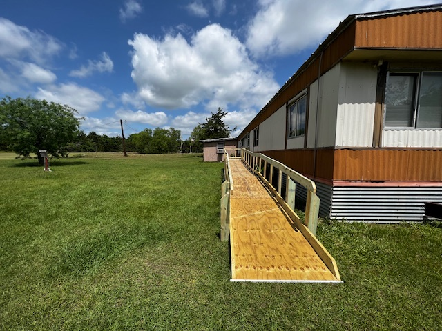
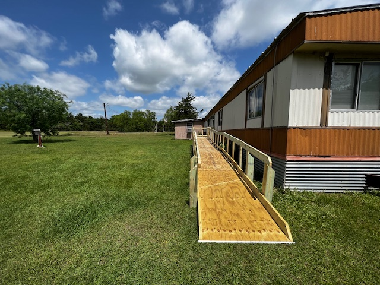

RAMPS is an organization that provides exceptional opportunities to give back to the Bryan community. Through
this group I have been able to help construct 4 different ramps. Each one has improve the lives of a family by
granting a person with disabilities access to their home where they would previously require assistance entering.
This organization has also worked with groups such as The Big Event and Habitat for Humanity, which have allowed
me to provide services such as building houses and landscaping
RAMPS Website